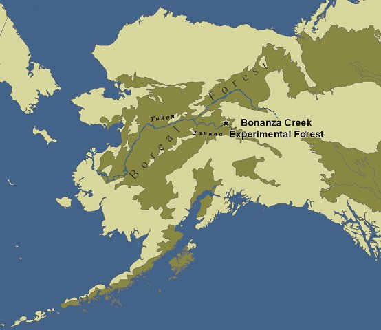
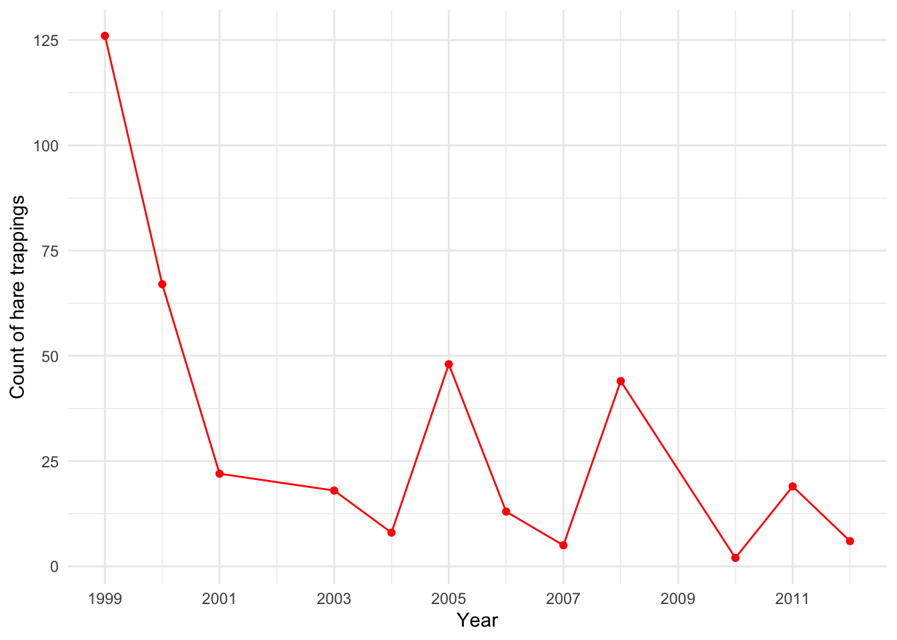

hares <-read_csv(here("posts", "2021-09-18-juvenile-snowshoe-hares-exploration","bonanza_hares.csv")) #read in data
Rows: 3197 Columns: 14
── Column specification ────────────────────────────────────────────────────────
Delimiter: ","
chr (8): date, grid, trap, l_ear, sex, age, notes, study
dbl (5): r_ear, weight, hindft, b_key, session_id
lgl (1): time
ℹ Use `spec()` to retrieve the full column specification for this data.
ℹ Specify the column types or set `show_col_types = FALSE` to quiet this message.

Figure 1: Map of Bonza Creek Experimental Forest, interior Alaska USA (https://www.lter.uaf.edu/research/study-sites-overview)
Introduction:
This mini exploratory report is on juvenile snowshoe hares in Bonanza Creek Experimental Forest (Long Term Ecological Research site). The Bonanza Creek LTER is a member of the U.S. LTER Network which is supported by the National Science Foundation and by the USDA Forest Service, Pacific Northwest Research Station. The Bonanza Creek Experimental Forest (BCEF) was established in 1963 is a 50 km2 experimental forest located approximately 20 km southwest of Fairbanks, Alaska and located on land owned by the State of Alaska. The Forest is within the Tanana Valley State Forest, a unit managed by the Division of Forestry, State of Alaska. This report covers analyses including: annual juvenile hare trap counts, comparison of juvenile hare weights by sex and site, juvenile weight comparison between male & female snowshoe hares, and an analysis of the relationship between juvenile snowshoe hare hind foot length. (information regarding teh Bonaza Creek LTER network was provided from https://www.lter.uaf.edu/research/study-sites-bcef)
Data and analyses:
This analysis contains data with counts and sizes of juvenile snowshoe hares recorded from 1998 - 2012. This report analyses: differences in annual juvenile hare trap counts (Fig. 2), comparison of juvenile hare weights by sex and site (Fig 3), comparison of mean weights for juvenile male and female snowshoe hares (Table 1), comparison of the relationship between juvenile weight & hind foot length (Fig. 4), and a linear regression describing how juvenile snowshoe hare weight changes with respect to hind foot length (Fig. 5). Following exploratory data visualization, weight between male and female hares are by two-sample t-tests using a significance level (α) of 0.05 throughout. Differences between groups are described by Cohen’s d effect size. The relationship between hind foot length (mm) and weight (g) is explored by simple linear regression (Fig. 5). All analyses are in R version 4.0.2 using RStudio version 1.3.1056.
1. Exploratory findings
Annual juvenile hare trap counts
## from the original hares df, mutate to make new columns of the date and then years## filter by juveniles ## group by year## report those counts of juveniles by year hares_juvinile <- hares %>%mutate(Date =mdy(date))%>%mutate(Year =year(Date)) %>%filter(age =="j") %>%group_by(Year) %>%count()## make a simple line graph of year vs count of the juvenile hare trap countsggplot(data = hares_juvinile,aes(x=Year, y= n)) +geom_line(col="red") +geom_point(col ="red") +theme_minimal() +labs(x="Year", y='Count of hare trappings') +scale_x_continuous(breaks=seq(1999, 2012, 2))

Figure 2. Annual juvenile hare trap counts (1999 - 2012)
# mean(hares_juvinile$n) #to see the mean of counts from the hares_juvinile df# median(hares_juvinile$n) #to see the median of counts from the hares_juvinile df
Major takeaways from Figure 2:
The max count of juvenile hare trappings was 126 in 1999. The min count of 2 juvenile hare trappings in 2010. The mean annual number of juvenile hares trapped was 31.5. The median annual number of juvenile hares trapped is 18.5. More generally, in more recent years (2005-2012), hare trapping have fluctuated quite a bit showing sharp increases followed by decreases.
Figure 3. Mean weight observations (g) for juvenile snowhoe hare weights of the three differnt sites (Bonbs, Bonmat, and Bonrip) from 1999 to 2012. With regards to color: pink (female), blue (male) and grey (NA). Box endpoints indicate the 25th and 75th percentile values; the black line indicate the median value for each sex.
Major takeaways from Figure 3
This graph depicts juvenile hare weight by sex across the three sites. Site bonbs has the max weight for both male and female hares. In contrast, site bonrip has the lowest weight of female and male hares. Additionally, this graph depicts the upper and lower quartiles of each sex at the different sites. This graph also includes NA values.
3. Juvenile weight comparison of male & female snowshoe hares
hares_weight_mf <- hares %>%filter(age =="j") %>%select(c("sex", "weight")) %>%group_by(sex) %>%summarise(mean_weight =mean(weight, na.rm=T),sd_weight =sd(weight, na.rm=T),n =n())hares_weight_mf %>%kable(col.names =c("Sex","Mean weight (g)","Standard deviation","Sample size (n)"), caption ="**Table 1**: summary statistics of juvenile male and female snowshoe hare 1999 - 2012") %>%kable_styling(full_width =FALSE)
**Table 1**: summary statistics of juvenile male and female snowshoe hare 1999 - 2012
Welch Two Sample t-test
data: hares_weight_f and hares_weight_m
t = 0.85568, df = 2428.6, p-value = 0.3923
alternative hypothesis: true difference in means is not equal to 0
95 percent confidence interval:
-14.61684 37.24934
sample estimates:
mean of x mean of y
1359.448 1348.131
Cohen's d
d estimate: 0.03389279 (negligible)
95 percent confidence interval:
lower upper
-0.04522614 0.11301172
Major takeaway from means comparison output:
Male snowshoe juvenile hares had the larger mean (945.8589 ± 333.2151, n = 163; mean ± 1 standard deviation), compared to snowshoe female juvenile hares which had a smaller mean (855.3909 ± 292.2526, n = 200; mean ± 1 standard deviation). The actual difference in means from juvenile male and female snowshoe hares is 11.317. The outcomes of the two sample t-test indicates there is a pretty decent chance (40%) of randomly selecting two samples from populations with the same mean that are this different by chance. In sum, the difference in means is not significant (Welch’s two-sample t-test: t(2428.6) = 0.85568, p > 0.001), and the effect size is negligible (Cohen’s d = 0.0334).
4. Examining relationship between juvenile weight & hind foot length.
Figure 4. Juvenile hare weights vs hind foot length from 1999 - 2012
5. Linear model output
## linear regression hares_lm <-lm(weight ~ hindft, data = hares_hind)# Return the complete overview:summary(hares_lm)
Call:
lm(formula = weight ~ hindft, data = hares_hind)
Residuals:
Min 1Q Median 3Q Max
-661.1 -108.2 17.0 164.2 737.5
Coefficients:
Estimate Std. Error t value Pr(>|t|)
(Intercept) -279.3419 115.4811 -2.419 0.0163 *
hindft 9.5234 0.9283 10.259 <2e-16 ***
---
Signif. codes: 0 '***' 0.001 '**' 0.01 '*' 0.05 '.' 0.1 ' ' 1
Residual standard error: 263.9 on 247 degrees of freedom
(129 observations deleted due to missingness)
Multiple R-squared: 0.2988, Adjusted R-squared: 0.2959
F-statistic: 105.2 on 1 and 247 DF, p-value: < 2.2e-16
# We can use the broom::tidy() function to get the model outputs in nice data frame format:hares_lm_tidy <- broom::tidy(hares_lm)# Get the intercept: hares_int <- hares_lm_tidy$estimate[1]hares_int
[1] -279.3419
# Then to get the flipper_length coefficient:hares_coef <- hares_lm_tidy$estimate[2]hares_coef
[1] 9.523399
#What about getting some other model information (degrees of freedom, F-statistic, p-value, etc.)?#Many of these statistical outcomes can be accessed more easily using broom::glance().# Metrics at a glance: hares_lm_out <- broom::glance(hares_lm)hares_lm_out
# A tibble: 1 × 12
r.squared adj.r.squa…¹ sigma stati…² p.value df logLik AIC BIC devia…³
<dbl> <dbl> <dbl> <dbl> <dbl> <dbl> <dbl> <dbl> <dbl> <dbl>
1 0.299 0.296 264. 105. 8.46e-21 1 -1741. 3487. 3498. 1.72e7
# … with 2 more variables: df.residual <int>, nobs <int>, and abbreviated
# variable names ¹adj.r.squared, ²statistic, ³deviance
# ℹ Use `colnames()` to see all variable names
Figure 5. Linear model of weight (g) vs hind foot length (mm) in juvenile snowshoe hare (1999 - 2012)
Outcomes of linear regression:
Simple linear regression was used to explore between juvenile snowshoe hare weight (g) and hare hind foot length (mm) across all sites, and including both male and female snowshoe hares. A significant regression model was found (\(\beta\) = 9.523, F(1,247) = 105.2, p < 0.001) with an R2 of 0.299. The slope of the linear model is 9.523 and the y-intercept is -279.3. This slope of the linear model suggests that on average, we expect that weight to increase by 9.523 grams for each 1 mm of increase in hind foot length. Additionally, when conducting a linear model, there are assumptions such as, linearly related variables, normally distributed, Homoscedasticity and iid residuals (no serial correlation). When looking at the Residual Variances, for Homoscedasticity, it appears residuals do not appear randomly distributed evenly around the horizontal dotted line. Additionally, in the QQ plot, the residuals do not appear to be entirely normally distributed – theres quite a few points on the tails that drift from the dotted line. This is probably partly why we see a more moderate R value (0.547).
Summary of juvenile hares exploration:
The max count of juvenile hare trappings was 126 in 1999. The min count of juvenile hare trappings was 2 in 2010. The mean annual number of juvenile hares trapped was 31.5. The median annual number of juvenile hares trapped is 18.5. More generally, in more recent years (2005-2012), hare trapping have fluctuated quite a bit showing sharp increases followed by decreases.
The actual difference in means from juvenile male and female snowshoe hares is 11.317. The outcomes of the two sample t-test indicates there is a pretty decent chance (40%) of randomly selecting two samples from populations with the same mean that are this different by chance. The cohend d (effect size) is 0.03389279, a negligible effect size.
This slope of the linear model suggests that on average, we expect that weight to increase by 9.523 grams for each 1 mm of increase in juvenile hind foot length.
Obtained a moderate persons r = 0.547 value between weights and hind foot length
Citations:
Kielland, K., F.S. Chapin, R.W. Ruess, and Bonanza Creek LTER. 2017. Snowshoe hare physical data in Bonanza Creek Experimental Forest: 1999-Present ver 22. Environmental Data Initiative. https://doi.org/10.6073/pasta/03dce4856d79b91557d8e6ce2cbcdc14
Link to metadata: https://portal.edirepository.org/nis/metadataviewer?packageid=knb-lter-bnz.55.22